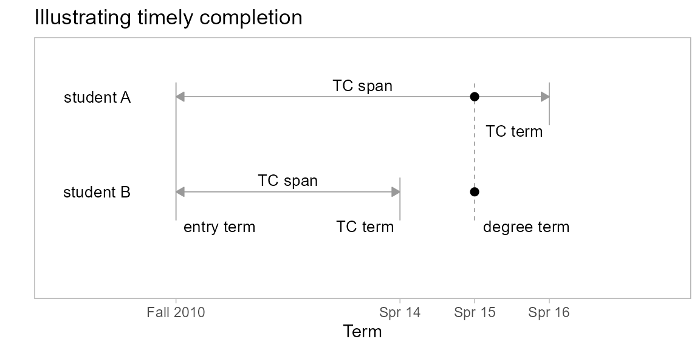

Students generally expect to complete a program within some span of years after entry. Institutions typically use a 6 year span, based on the IPEDS convention of using 150% of the “normal time” at a 4-year institution to define gradation rate.
However, the span over which program completion might be considered “timely” is highly dependent on the choices a student makes such as transferring institutions or changing majors.
For example, the figure illustrates the history of two students who enter in Fall 2010 and graduate in Spring 2015. We assume a basis of 6 years for timely completion.
Student A is a first-time-in-college student with a timely completion (TC) term of Spring 2016. Their completion is timely because their degree term comes before their TC term.
Student B is a transfer student, entering as a junior. Having already satisfied 2 years of program requirements, their TC term is Spring 2014. Their completion is not timely because their degree term comes after their TC term.

midfieldr functions
()packages
# packages used
library("midfieldr")
library("midfielddata")
library("data.table")
library("ggplot2")
# optional code to control data.table printing
options(datatable.print.nrows = 10, datatable.print.topn = 5)